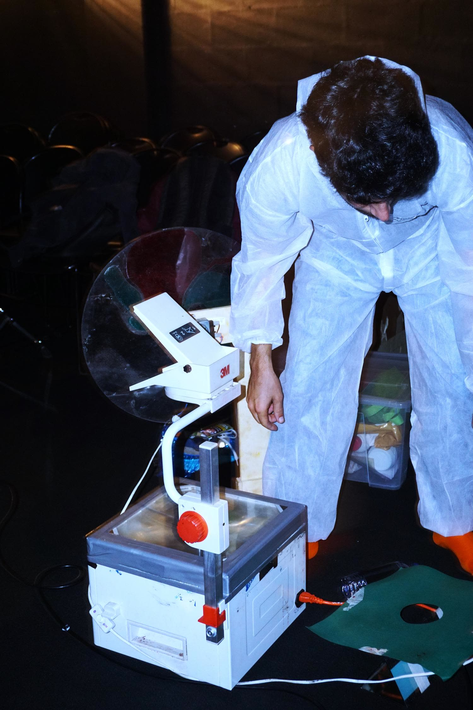
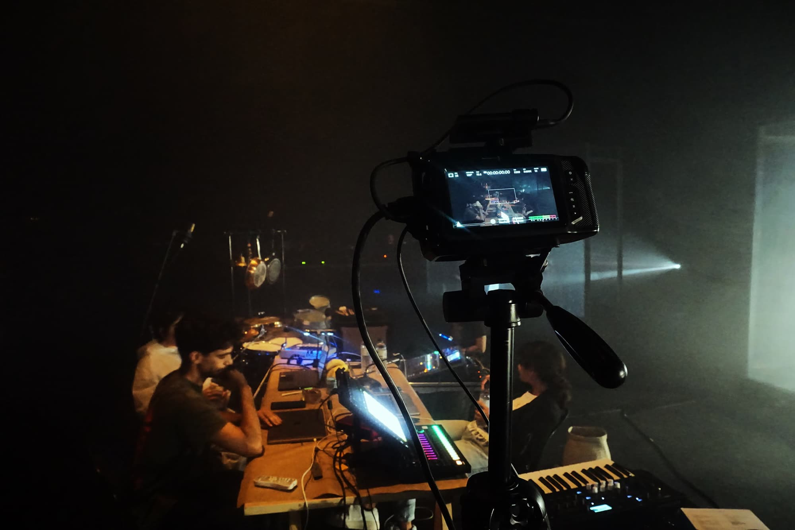
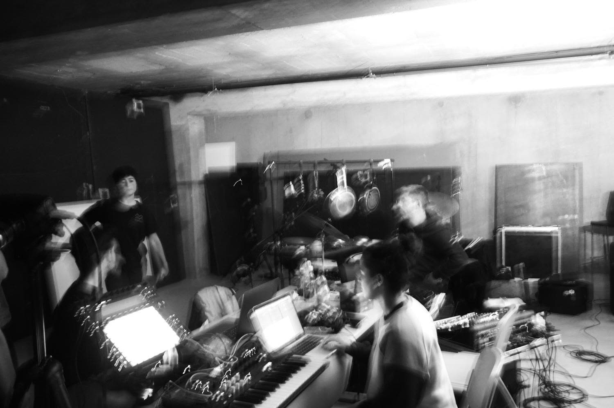
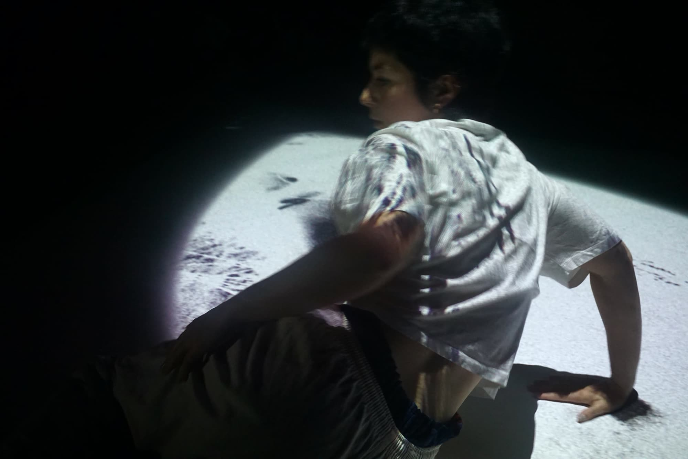
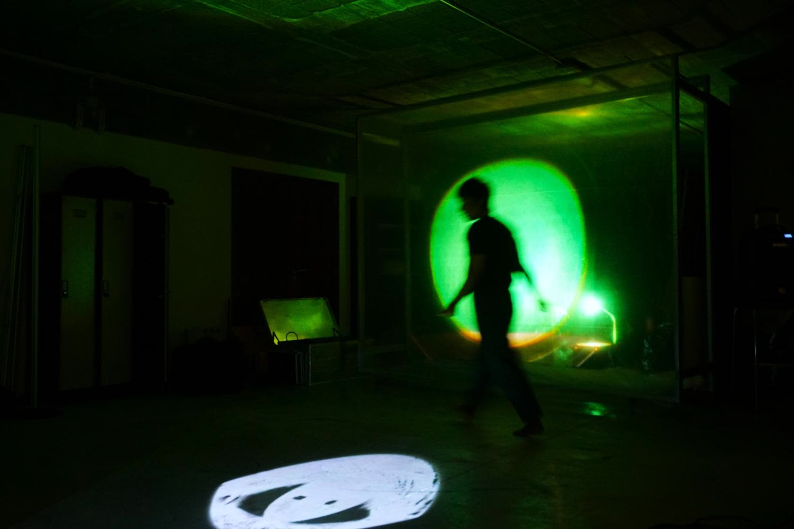
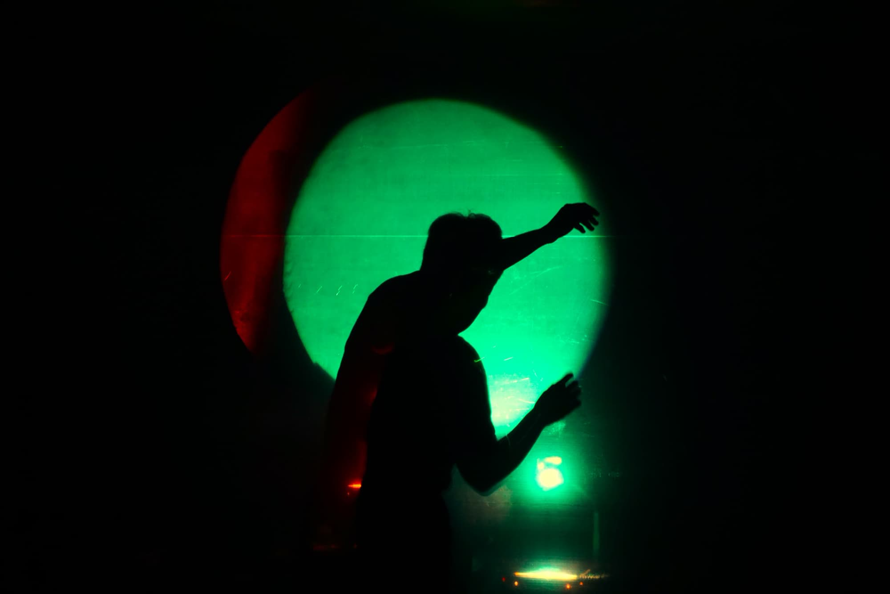
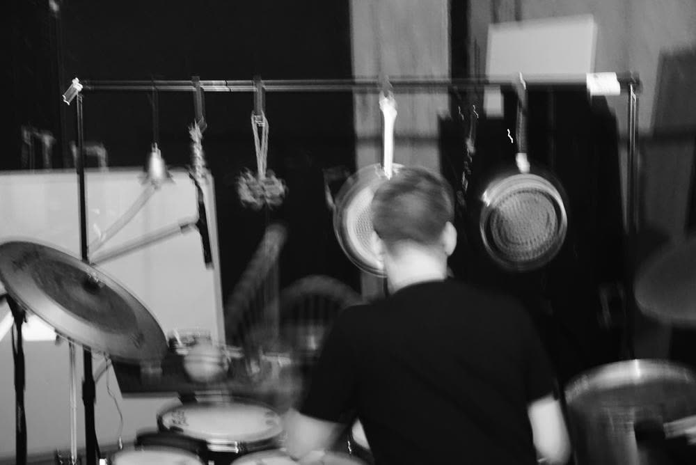
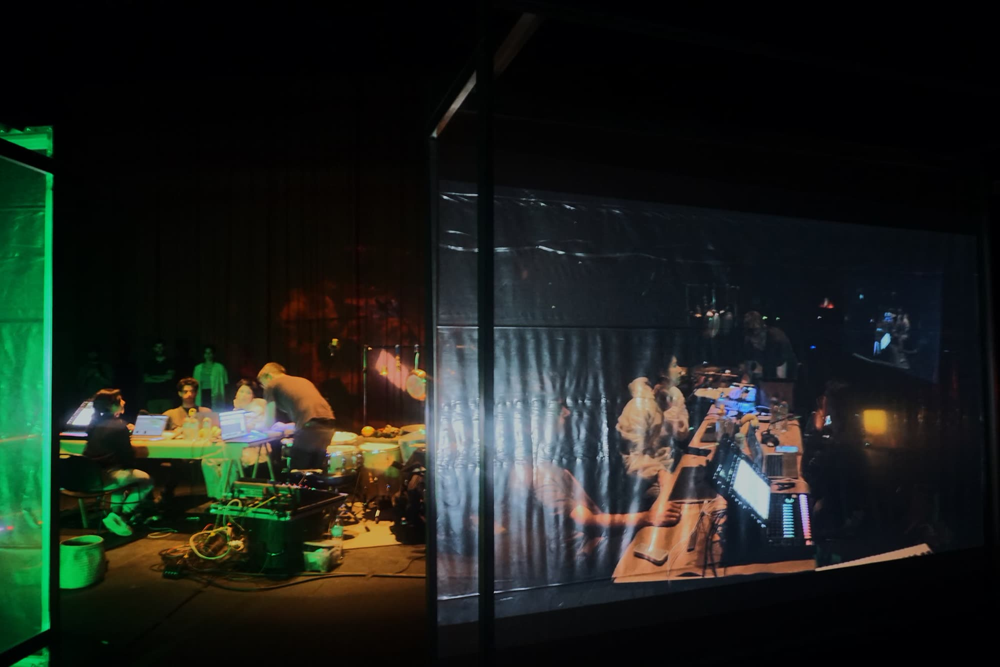
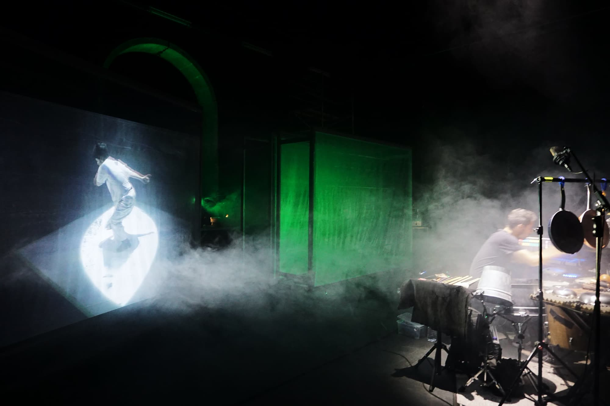

© Catarina Ribeiro
The result of a two-week artistic residency, this multidisciplinary performance (im)materialises the first encounter and collaboration between music, dance and multimedia artists. The piece challenges the traditional boundaries between these disciplines, rejecting narrative as a guiding thread and exploring improvisation and experimentation as a method of artistic creation. The outcome of this residency is presented here in a necessarily embryonic form, representing the adrenaline that a first encounter between artists can spark.
This artistic residency is part of the EM.Pressão event, a one-off space for artistic creation, presentation and reflection, where talks and workshops open to the community were also developed. This project was supported by the Viana do Castelo City Council, through the Viana Jovens com Talento programme.
Co-creation and Performance - Juliana Fernandes, Klin Klop, Manuel Brásio and Samuel Rego
Audio Samples
Sample 1 - Scene 1: Gato Fedorento, Série Meireles, “Isso é um crime de salada” (2004)
Sample 2 - Scene 1: Speech – Creature “Bem Bonda” by Gil Dionísio (2021)
Sample 3 - Scene 4: Strings – Antonio Vivaldi, “Le quattro stagioni”, performed by Il Giardino Armonico (2006)
Technical Direction - Rui Gonçalves
Stage Direction - Ruben Lages
Sound Technician - Duarte Leitão
Light Technician - Nuno Almeida
Light Operation - Ricardo Magalhães
Operational Assistant - André Lima
Set Design - Manuel Almeida
Production - Catarina Ribeiro, Manuel Almeida, Sara Miguelote and Ricardo Figueiredo
Image and Communication - Ricardo Figueiredo and Catarina Ferreira
Video Recording and Promotional Video - Jorge Jordão
Support - Câmara Municipal de Viana do Castelo, Gabinete da Juventude
Artistic Residency Support - Escola Superior de Educação do Instituto Politécnico de Viana do Castelo, EVIC (Escola Vocacional de Interpretação e Criação)
Partnerships - Teatro Municipal Sá de Miranda, Teatro do Noroeste - Centro Dramático de Viana, AISCA (Associação de Intervenção Social Cultural e Artística), EVIC (Escola Vocacional de Interpretação e Criação), QUALIA Coll and Amadeus Music Center
Acknowledgments - Helder Dias, Ricardo Simões, Mariana Pombal, Wallace Wong, José Almeida, Ana Alistão, Gil Enes and interferência.pt
Website - www.empressao.com
Instagram - @empressaoevento









© Catarina Ribeiro